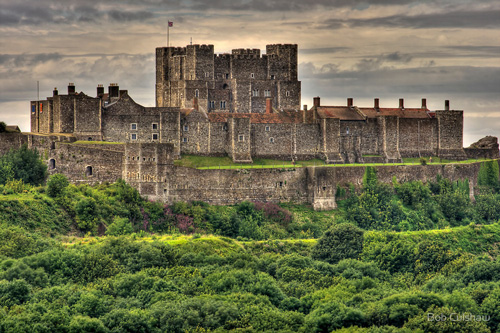
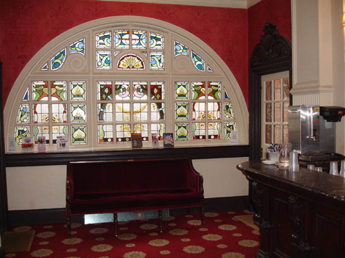
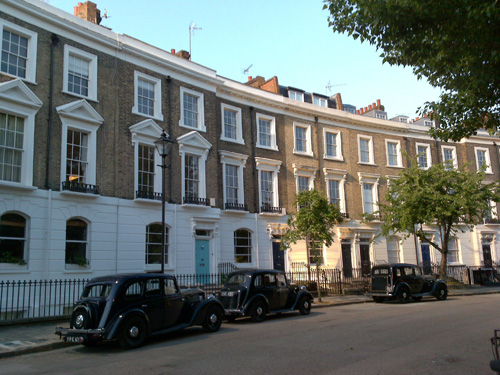
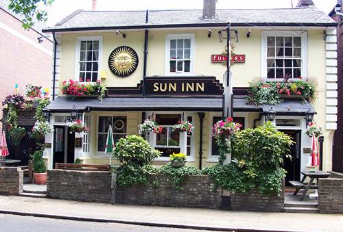
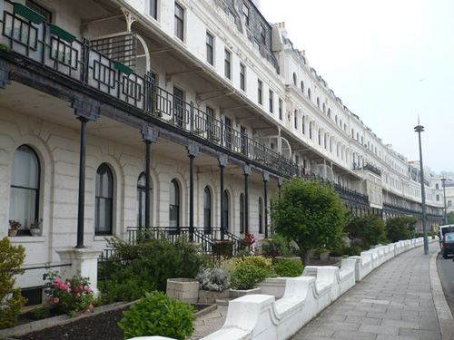
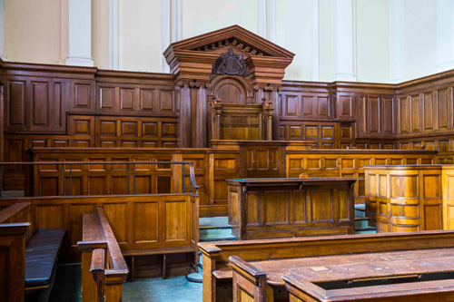

Dover Castle as itself.

The Dress Circle Bar at the Richmond Theatre where Lieutenant Race meets Poirot. Richmond Theatre is also used in 'Mrs McGinty's Dead' and 'The Big Four'.

Thornhill Crescent in Barnsbury, London N1 used as Wilbraham Crescent.

Woburn Place, London WC1 is used as the setting for the Secretarial Agency and the Photography Studio. (Also used in 'Lord Edgware Dies').

The Sun Inn in Richmond as the Hostelry in Dover which Inspector Hardcastle recommends to Poirot.

However Poirot prefers to stay at 'The Castle Hotel' at Waterloo Crescent in Dover.

Surrey County Council chambers in Kingston-upon-Thames used as the setting for the Inquest.

Pump Cloisters in Middle Temple, London WC2 where Merlina Rival is murdered. (Also used in 'Third Girl').